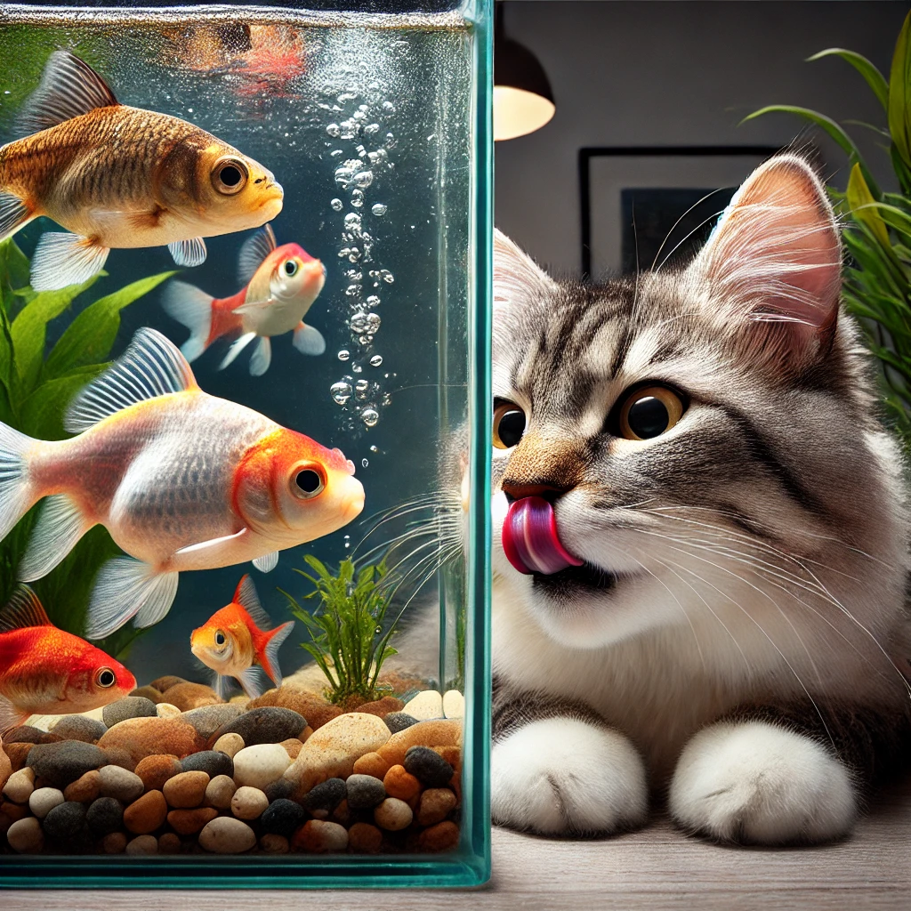
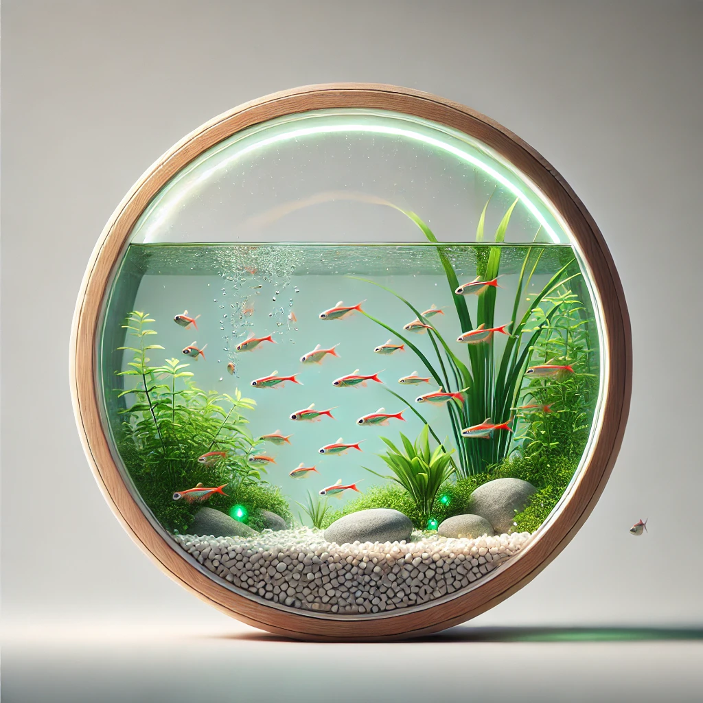
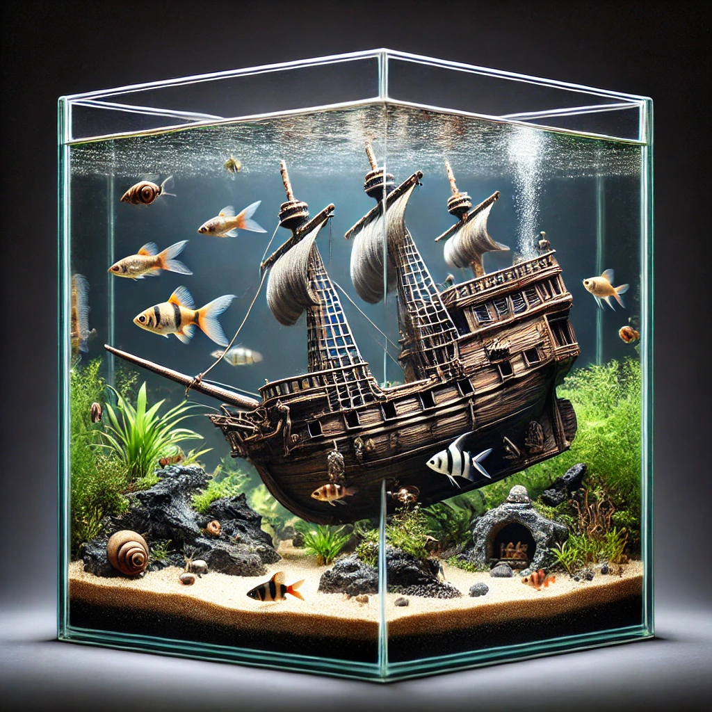
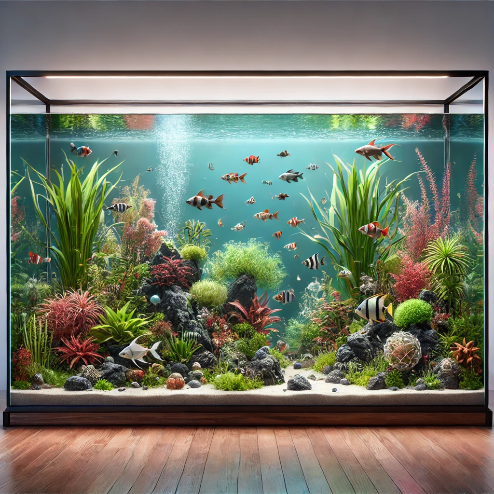
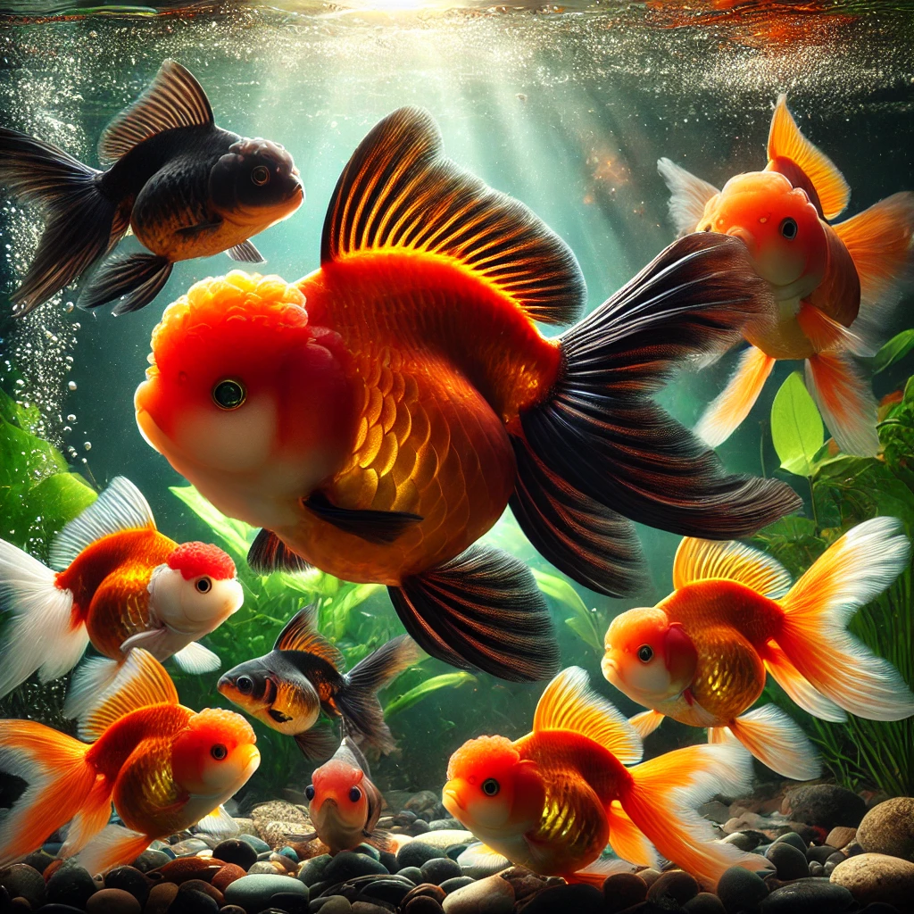
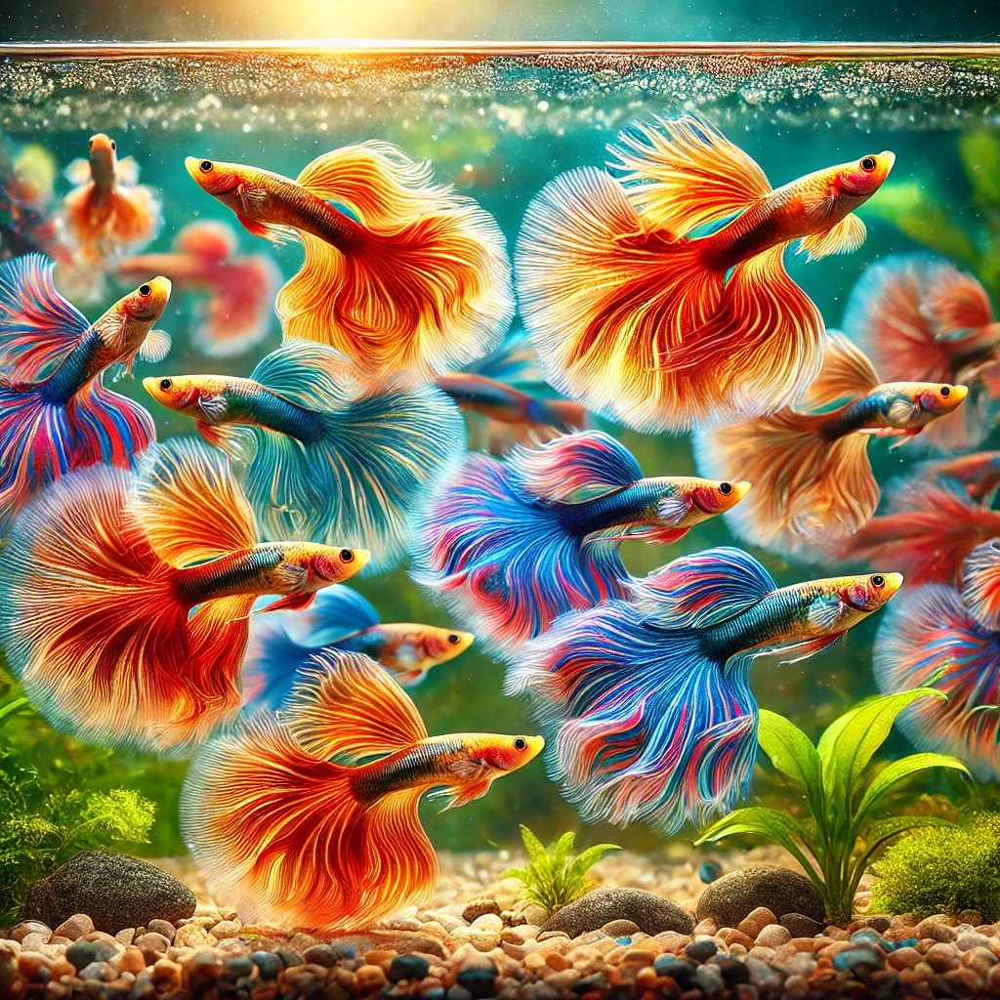
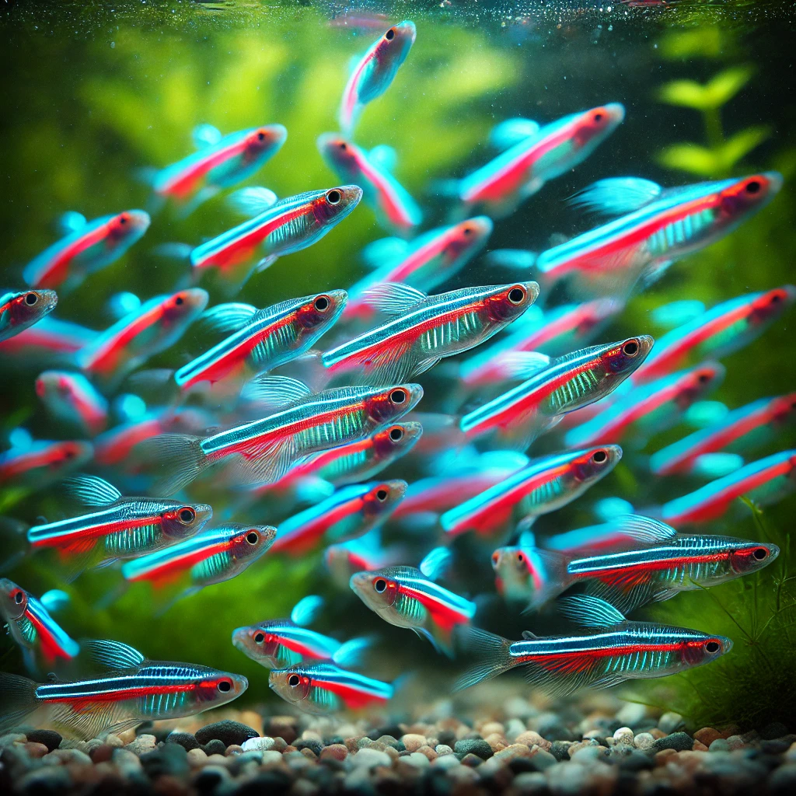
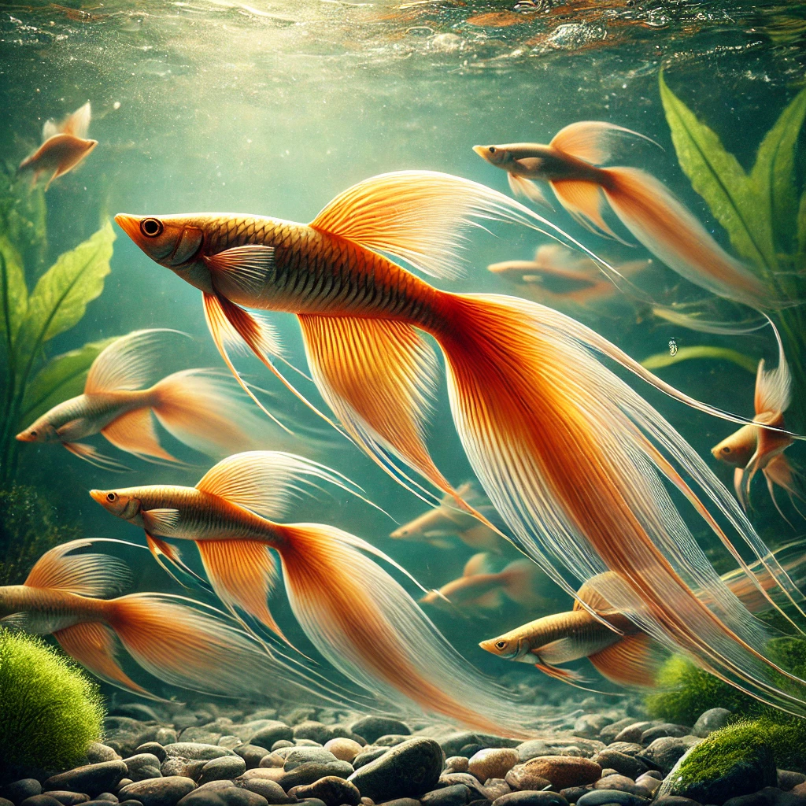
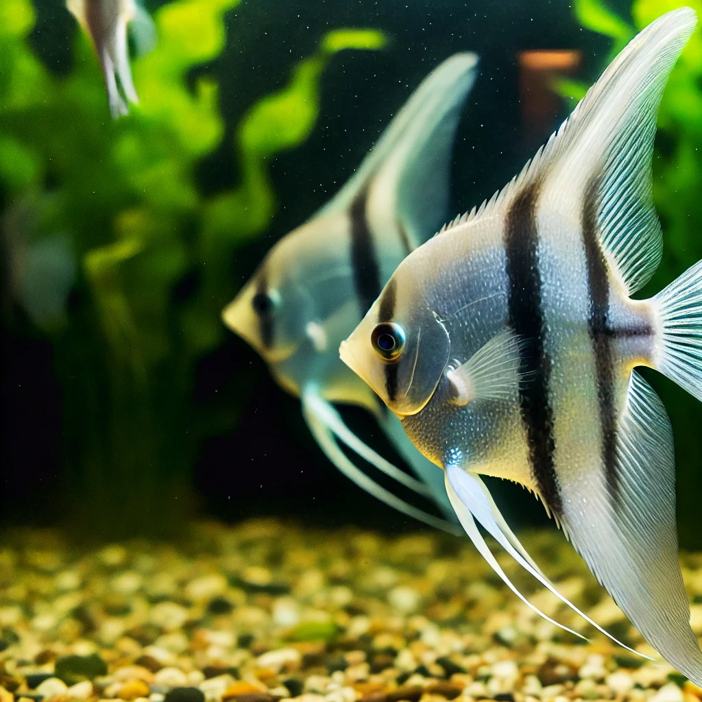
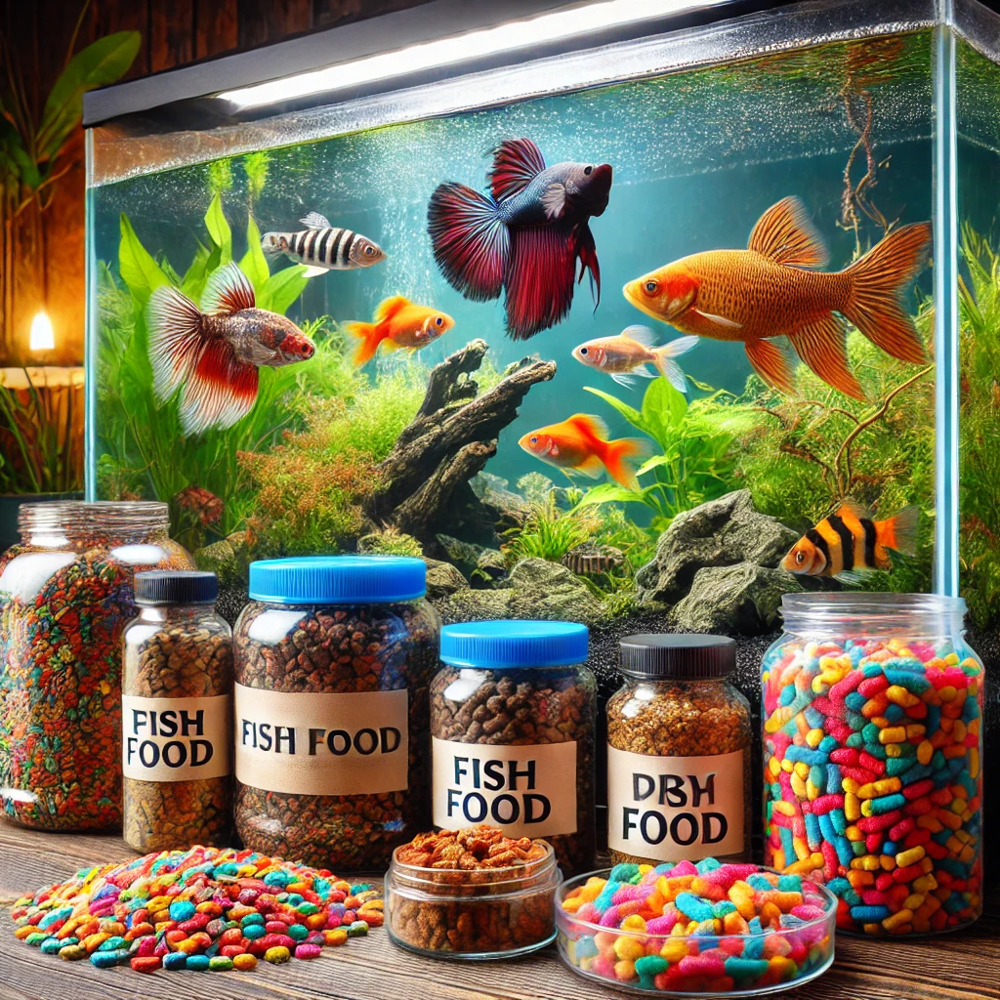

Последние статьи
Как удержать инстинкт охотника и не съесть всех рыбок?

Привет, это Коралла! Если ты такая же кошка, как я, то наблюдение за
рыбками может стать настоящим испытанием для твоего охотничьего
инстинкта. Но не волнуйся, я знаю, как справиться с этим желанием и не
навредить своим аквариумным друзьям.
Во-первых, перед наблюдением за рыбками обязательно нужно плотно
поесть. Да, да! Как говорится, на сытый желудок легче не поддаться
искушению. А если рядом ещё и вкусняшка лежит, то рыбки могут плавать
сколько угодно, а ты даже и не подумаешь на них нападать.
Во-вторых, можно выпить водички... из аквариума! Конечно, шутка, лучше
пей из своей миски. А вот если очень хочется порезвиться — возьми
лазерную указку или погоняй мух! После такого развлечения ты будешь
слишком уставшей, чтобы охотиться на рыб.
И, наконец, главное — наслаждайся зрелищем. Ведь рыбки — это не еда, а
настоящее шоу для твоих кошачьих глаз. Они плавают, сверкают своими
чешуйками и устраивают подводные представления. Наблюдать за ними
можно часами, главное — сохранять спокойствие и помнить, что они твои
друзья.
Так что, дорогие кошки, наигрались, поели и теперь спокойно смотрим
рыбок без лишних движений!
Как выбрать аквариум для рыбок?



Привет, рыболюбы! Меня зовут Коралла, и сегодня я расскажу, как
правильно выбрать аквариум для ваших питомцев. Прежде всего, важно
определиться с размером аквариума — чем больше, тем лучше для рыбок,
так как им нужно пространство для плавания. Не забывайте о качестве
воды: хороший фильтр обеспечит чистоту, а обогреватель поддержит
нужную температуру. Форма аквариума тоже имеет значение —
прямоугольные аквариумы лучше для наблюдения за рыбками. Обратите
внимание на подсветку: она не только украшает аквариум, но и важна для
здоровья растений. И, конечно, не забывайте об оформлении! Рыбки любят
прятаться в укрытиях, а я, как кошка, люблю наблюдать за их игрой в
этих укромных уголках.
Топ 5 видов рыб для кошек!
Привет, это снова я, Коралла! Как опытная наблюдательница за
аквариумными рыбками, я составила свой личный топ 5 рыб, за которыми
кошки могут наблюдать целыми днями:
-
Золотые рыбки

На первом месте, конечно, золотые рыбки! Они всегда привлекают
внимание своим ярким цветом и плавными движениями. Эти рыбки любят
исследовать каждый уголок аквариума, что делает их отличным объектом
для долгих наблюдений. А их блестящая чешуя особенно красиво
переливается в свете аквариумной лампы — зрелище, от которого кошке
трудно оторваться.
-
Гуппи

Второе место занимают гуппи — одни из самых популярных аквариумных
рыбок. Их длинные, разноцветные хвостики развеваются, как маленькие
флаги, и завораживают своей грацией. Гуппи всегда активны, постоянно
плавают в поисках еды или играют друг с другом. Благодаря своему
маленькому размеру и подвижности, за ними интересно наблюдать
часами.
-
Неоны

Неоны — это настоящие маленькие светлячки в аквариуме. Эти крошечные
рыбки известны своим неоновым свечением, которое особенно впечатляет
в полумраке. Кошкам нравится наблюдать, как они снуют взад и вперёд,
сверкая своими полосками. А когда неоны собираются в стайку,
создаётся впечатление, что в аквариуме зажглись маленькие огоньки.
-
Меченосцы

Четвёртое место я отдаю меченосцам. Эти рыбки привлекают внимание
своими длинными плавниками, похожими на мечи. Они очень активны и
любят плавать быстро и резко, что вызывает настоящий интерес у
кошек. Меченосцы — не только красивые, но и достаточно выносливые,
поэтому они часто становятся фаворитами наблюдателей.
-
Скалярии

И, наконец, на пятом месте скалярии — рыбки с настоящей королевской
грацией. Их плавные, медленные движения создают ощущение, будто они
танцуют в воде. Скалярии могут часами парить в толще воды, изящно
поворачивая свой широкий хвост. Эти рыбки большие и медлительные,
что делает их идеальными для спокойного наблюдения.
Вот такой у меня получился топ. А какая рыбка стала твоей любимой?
Чем кормить аквариумных рыбок?

Привет, это снова я, ваша кошка-эксперт Коралла! Сегодня я расскажу,
чем лучше всего кормить аквариумных рыбок, чтобы они оставались
здоровыми и активными.
Во-первых, важно понимать, что разным видам рыбок нужен разный корм.
Например, для мелких рыбок, таких как неоны и гуппи, лучше всего
подойдёт мелкий сухой корм в виде хлопьев или гранул. Этот корм
медленно опускается на дно, что даёт рыбкам возможность спокойно его
поедать. Важно не перекармливать рыбок, иначе остатки корма могут
загрязнить воду в аквариуме.
Во-вторых, существуют специальные корма для хищных рыб. Такие рыбы,
как скалярии или меченосцы, любят побаловать себя живым кормом —
дафниями, мотылём или артемией. Эти корма содержат много белка и
имитируют естественную пищу рыб. Живой корм особенно полезен для
развития молодняка и поддержания активности взрослых рыб.
И, наконец, стоит упомянуть натуральные продукты. Некоторые рыбки,
например золотые рыбки, любят лакомиться кусочками овощей — шпинатом,
кабачками или огурцами. Эти продукты обеспечивают рыб витаминами и
клетчаткой, что особенно полезно для их пищеварения.
Главное правило — кормить рыбок разнообразно, чтобы они получали все
необходимые питательные вещества. Так что будьте внимательны к их
диете, и ваши рыбки будут здоровыми и счастливыми!